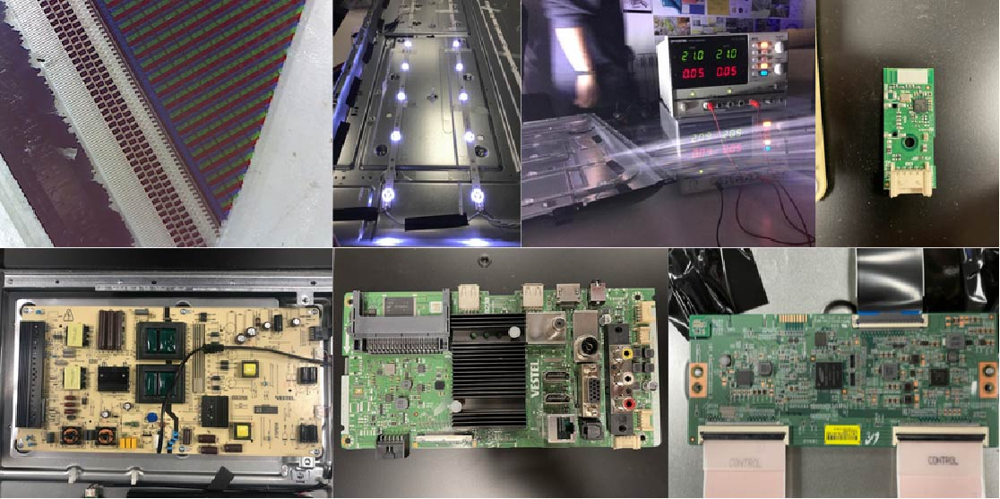
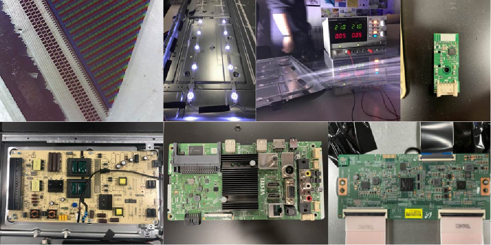

Tech Beyond the Myth
Diving bottom-up into technology to see how manufacturers can approach and use their tools to produce the products and systems
that we use everyday.
Forensics of the obsolescense
Questioning what is inside the products we use on daily base provided insights on how extremely extensive modern day production systems are.
Supply chains literally stretch across the globe with one product having components being manufactured in Japan, Turkey, Russia, China and Taiwan.
And more so, each of these locations having it's own selection of suppliers with sub-components, sub-sub-components and raw materials that can come from e.g. Africa, South-East Asia or South-America.
With likeliness of being cross-distributed between them so that any product produced by this system - on itself - has travelled an insane amount of distance and, in a way, is an encapsulement of the world's efforts itself. 🌍
Aside of that we learned that by disassembling a recent model HITACHI television 📺 and web-researching the parts inside that the same PCB (printed circuit board) produced by
a single chip-giant can be sold to several (direct market-rivals) electronics-companies and they can sell it to different customer segments by choosing to in- or exclude certain functionalities
on the same single PCB. In the case of our HITACHI tv this was shown as the unused outlines of where an HDMI-port would be in a more expensive model of the same brand.
I think that for those willing to see it's clear as day that this one-way-stream system cannot survive longterm and exploits its early layers for the benefits of those at the end.
Yes, the consumer has his television and he has it cheap, but at what cost for those that mined its materials and what purpose will it serve next..
Our television got to us because its LCD screen was cracked. The LCD screen, just one broken component out of at least ten perfect working parts
and still the entirity of the product was discarded. Even with the knowledgement of which component being the infunctional one, since it gave this as visual feedback on the screen.
 

Measuring the world
In this two-day course we used a provided tool as data-gatherer to reach an objective and
research our hypothesis.
HackMD,
RaspberryPi
By Ruben de Haan on November 14th, 2021